Devices (Device): | PIC32CX1012BZ25048(MCU) on WBZ451 module |
Devices (Used, On-Board): | Analog Temperature Sensor | RGB LED | User Button| User LED| UART-USB Converter|
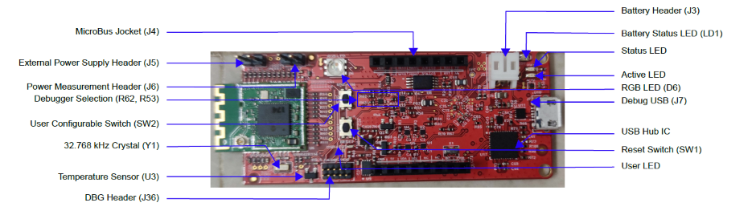
Hardware Block Diagram - Curiosity Board

Hardware Required
| Tool | Qty |
|---|---|
| WBZ451 Curiosity Board** | 2 |
| Micro USB cable | 2 |
| Android/iOS Mobile | 1 |
| Amazon Echo Plus** | 1 |
**Amazon Echo Plus acts as gateway / WBZ451 curiosity board programmed with “Combined interface” example if Echo Plus is not available.
Software
- 1.
Smartphone App
- 1.
Microchip Bluetooth Data (MBD) iOS/Android app available in Stores
- 2.
Alexa App installed on android/iOS mobile phone if Amazon Echo plus is used as Gateway
Demo Description
This application demonstrates the multi-protocol (concurrent operation of both Zigbee and BLE stacks) functionality of PIC32CXBZ2 family of devices and modules. The Zigbee commissioning over BLE uses Bluetooth Low Energy (BLE) link to exchange Zigbee commission data and run both Zigbee and BLE tasks simultaneously under FreeRTOS. The local zigbee lights (on board RGB LED) can be controlled over BLE or from Zigbee network. Multi-protocol can also be referred as "combo" for ease of readability in this doc.

BLE light control (Zigbee device is not yet commissioned):
If the combo device is not yet commissioned and not connected to Zigbee network, still would be able to control the RGB LED through BLE using “BLE sensor” sub app of MBD (Microchip Bluetooth Data) mobile app.
Zigbee device commissioning:
By connecting the device to the “BLE provisioner” sub app of MBD mobile app, the Zigbee part of combo device can be commissioned and brought to the existing zigbee network or can create new zigbee network (if there is no nearby network).
Zigbee local light control (Zigbee device is commissioned):
Combo light RGB LED can be controlled from Zigbee Gateway of the same network.
RGB LED can also be controlled through BLE using "BLE sensor" MBD app.
When the light status is changed from BLE, the light change report will be sent to zigbee gateway through Zigbee communication.
When the light status is changed from zigbee gateway through Zigbee communication, the light status will be notified to "BLE sensor app" if it is connected.
Any third-party gateway like Amazon Echo Plus can also be used as Zigbee Gateway. If Amazon Echo plus is not available, one of the WBZ451 Curiosity board can be programmed with Combined Interface pre-compiled image, which acts as zigbee gateway. Amazon Echo Plus Gateway as well as WBZ451 Curiosity based Combined Interface Gateway solutions are explained in the following demo steps.
Programming the precompiled hex file or Application Example
To run the demo, we would need a zigbee network formed by co-ordinator/zigbee gateway.
Any third-party gateway like Amazon Echo Plus can also be used as Zigbee Gateway. If Amazon Echo plus is not available, one of the WBZ451 Curiosity board can be programmed with Combined Interface pre-compiled image, which acts as zigbee gateway. Amazon Echo Plus Gateway as well as WBZ451 Curiosity based Combined Interface Gateway solutions are explained in the following demo steps.To run the demo using Combined Interface as gateway, we need 2 devices. One is the Combined Interface and the other is combo light.
- 1.
One of the WBZ451Curiosity board is programmed with Combined Interface which can act as Zigbee Gateway/Coordinator. Program the CI pre-compiled hex image by following steps on one curiosity board.
- 2.
Another WBZ451 Curiosity board is programmed with combo light application which can act as Zigbee Router. Follow the below step for programming combo light application on another curiosity board.
Programming the hex file using MPLABX IPE
- 1.
Precompiled Hex file is located in "<Harmony Content Path>\wireless_apps_pic32cxbz2_wbz45\apps\multiprotocol\ble_zigbee_light_prov\precompiled_hex" folder
- 2.
Follow the steps mentioned here
Caution: Users should choose the correct Device and Tool information
Programming the Application using MPLABX IDE
- 1.
Follow steps mentioned in of Running a Precompiled Example document
- 2.
Open and program the Application Example "ble_zigbee_light_prov.x" located in "<Harmony Content Path>\wireless_apps_pic32cxbz2_wbz45\apps\multiprotocol\ble_zigbee_light_prov\firmware" using MPLABX IDE
<Harmony Content Path> how to find what is my Harmony Content Path
On-board Resource Usage
| Sensor | Peripheral Used | I/O Pin | Comment |
|---|---|---|---|
| LED Control | TC2 (WO0, WO1), TC3 (WO0) in PWM Mode | PB0, PB3, PB5 | RGB LED color control. |
| Switch | EXTINT0 | PB4 | SW1 button in curiosity board to do Reset To Factory new |
| Temperature Sensor | ADC | PB6 | Read the room temperature from the MCP9700A sensor available in curiosity board |
| Timer | RTOS Systick Timer | Periodic timer functionality to initiate the sensor read operation and for Adv User LED control | |
| User LED | GPIO | PB7 | User LED in curiosity board. To indicate BLE advertisement/connect status |
Demo Steps
- 1.Supply power to WBZ451 Curiosity Board consisting of Combo light application by connecting a USB cable. Power Supply (PS) Green LED will turn on when connect to PC.

- 2.The application activity is shown as "Console Log" through on board UART-USB converter
Open Terminal(eg: Tera Term) with the setup as shown below to look for these logs
On the PC side virtual COM port connection that corresponds to the board shall have following settings:
BAUD RATE: 115200 (as configured in SERCOM configuration) PARITY: None DATA BITS: 8 STOP BITS: 1 FLOW CONTROL: None

Demo Steps: commissioning
The combo light can be connected to any zigbee gateway. The steps explained in Discovery of Combo Light from Amazon Echo Plus can be followed if Amazon Echo Plus acts as Zigbee gateway available. The steps explained in Discovery of Combo Light from WBZ451 Combined Interface (CI) gateway can be followed for WBZ451 based combined interface acts as Zigbee gateway.Discovery of Combo Light from Amazon Echo Plus
Voice Commands: Open Alexa to discover the Light device. Say “Discover my devices”. or
Alexa App:
- Launch Alexa app, from the menu, select the Add Device.
- Select the type of smart home device “Light” and select "Other".
- Initiate Discover Devices
- Input command : resetToFN on light device.The Light will be discovered and shown as light in Alexa app as shown below.
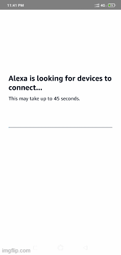
Discovery of Combo Light from WBZ451 Combined Interface (CI) gateway
Supply power to another WBZ451 Curiosity Board which is programmed with Combined interface image by connecting a USB cable. Power Supply (PS) Green LED will turn on when connect to PC.
Follow step 2 of Hardware & Software Setup for UART terminal Setup
- Send command: resetToFN and look for the below logs for successful zigbee network formation on CI
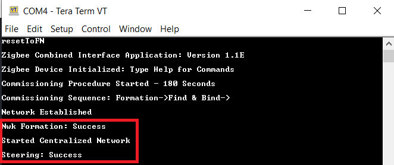
CI will open up the network for other zigbee devices to join for first 180sec from the first powerON. If commissioning of combo light is initiated after this 180sec, combo light will not get joined. This is same as Alexa saying "Discovering and put the device is pairing mode". To open up the network after 180sec, send the below commands in CI, before commissioning is initiated in combo device.
- a.
setPermitJoin 180 -> This command opens up the network for next 180sec
- b.
invokeCommissioning 8 0 -> This command opens up the network for "finding and binding procedure"
- a.
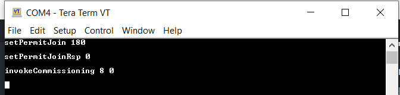
Connecting Combo Light to Zigbee Gateway (Echo plus or combined interface) through BLE commissioning- 1.Launch MBD Microchip Bluetooth Data app from mobile. Open "BLE Provisioner" sub app and scan for the devices. The device name "COMBO_LIGHT_XXXX" is seen when Scanned from mobile app. 'XXXX' is a unique number associated with this combo device. Connect to device and follow the below screenshots for the commissioning procedure.
- 2.Observe that the Blue "User LED" will be solid On when device is connected to mobile app.
- 3.Observe that RGB LED will be blinking when the device joins/forms a network at the interval of 1sec for next 180sec. This indication is required as per zigbee specification. Note: The combo light is configured with default primary channel mask (11,15,20,25) as per zigbee specification. The channel configuration from mobile app is needed only when the Gateway channel is not in any of the default channels. Tips: If commissioning procedure, does not find the nearby network (eg: Echo Plus), try to find the channel of the network, and configure the same channel while commissioning
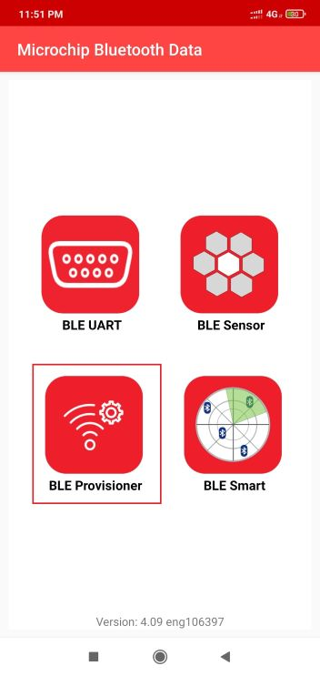 ----> 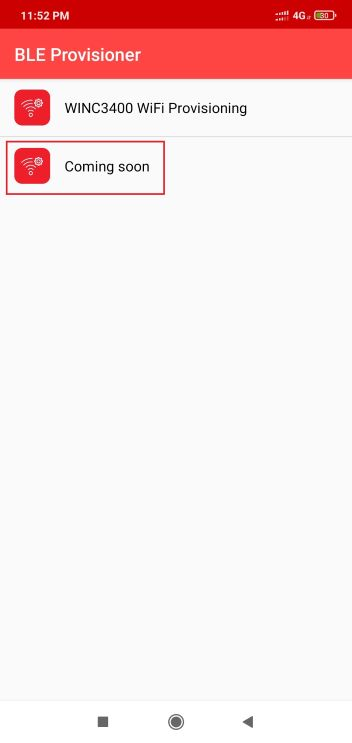
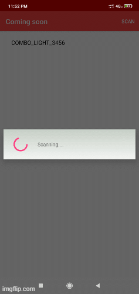 - 4.
When the combo light is joined to an existing network/formed its own network, the device state can be seen as "Commissioned"
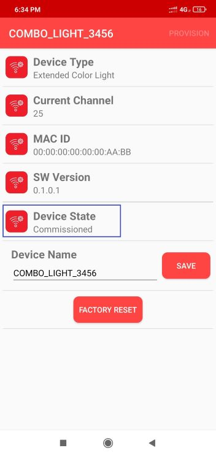
- 5.Success log on combo light when commissioned with Echo plus 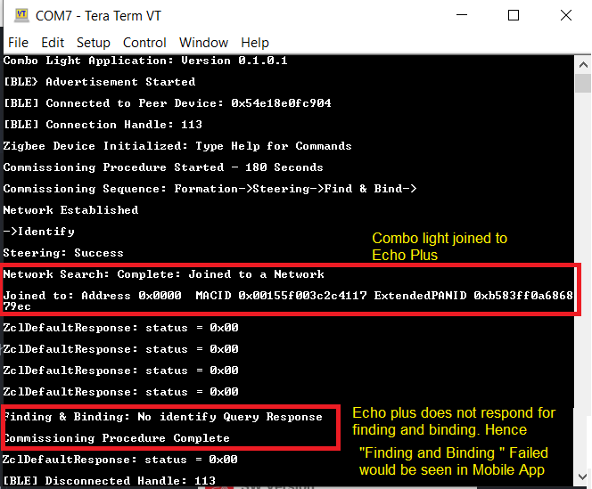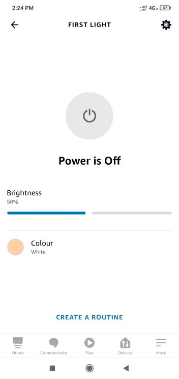
- 6.Success log on combo light when commissioned with Combined Interface
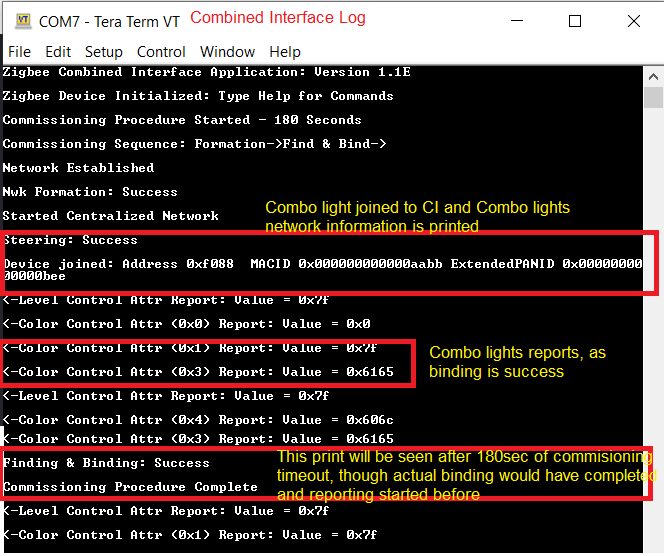
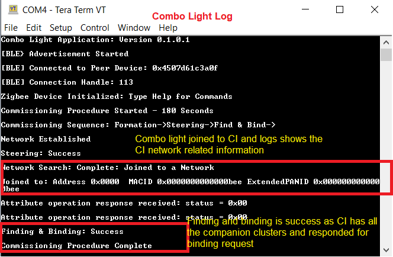 - 7.Status messages during commissioning: Below status messages can be observed during the commissioning procedure based on the conditions.
- Device Joined to an existing network
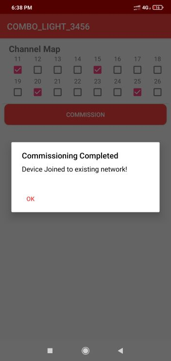 - Device formed its own network.When the commissioning procedures is initiated, the combo device search for any nearby network to get joined. If it does not find any network, then it form its own new network, since Zigbee light has the capability of forming its own distributed network.
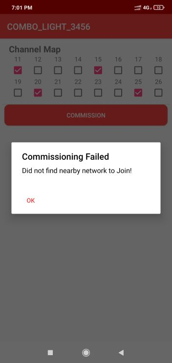
- Fail Status -Commissioning has failed (Did not join/create own network)

Info page shows some useful information like device type, current channel, device IEEE address and device state (Commissioned, Not-Commissioned)
Device name can be changed to any user preference name. While the device is scanned from MBD app, this device name will be seen in the scanned list. The name can be changed irrespective of commissioning state
- Re-Commissioning : If the combo light already joined to a network, and wanting to recommission to new network, the current networking related information to be deleted from NVM (Non volatile memory). Connect the combo device from "BLE Provisioner" app and press on "FACTORY RESET". This will delete networking information and the device will reset. Connect with combo light again and do the commissioning by following the steps 3 and 4.
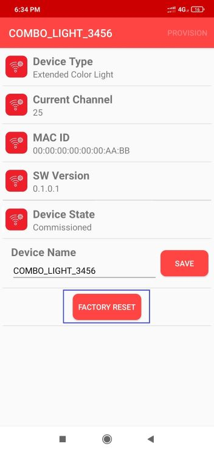Note: If the combo light was joined to an Echo Plus previously, remember to remove the light info from Alexa app before initiating the recommissioning.
Demo Steps: Light Control
RGB LED on WBZ451 curiosity board is tied with Zigbee and BLE functionality. The LED color and brightness can be changed through Zigbee network as well as from mobile app through BLE. The RGB color is synced with both Zigbee and BLE network.
- 1.RGB color control from MBD "BLE Sensor" mobile app
Launch MBD Microchip Bluetooth Data app from mobile. Open "BLE Sensor" sub app and scan for the devices. The device name "COMBO_LIGHT_XXXX" when Scanned from mobile app. Connect to device and follow the below screenshots for the light control.
Observe that the Blue "User LED" will be solid On when device is connected to mobile app.
The BLE Sensor mobile app will show the temperature (deg C) and LED status received from device, as well as allow the user to vary the RGB color and brightness
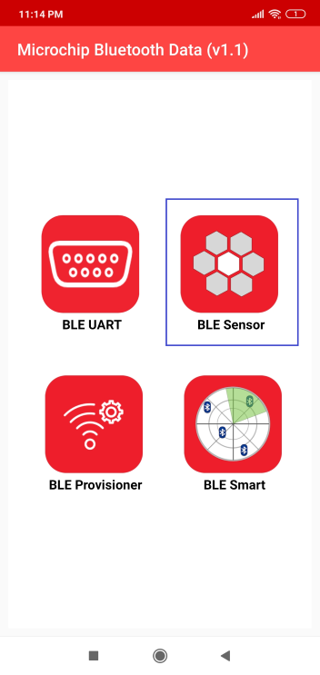 ----> 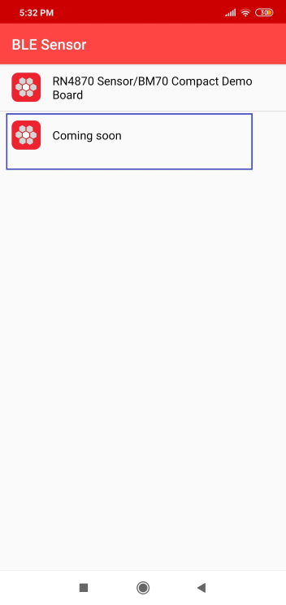 ----> 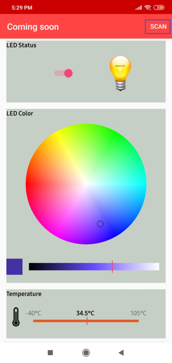 ----> 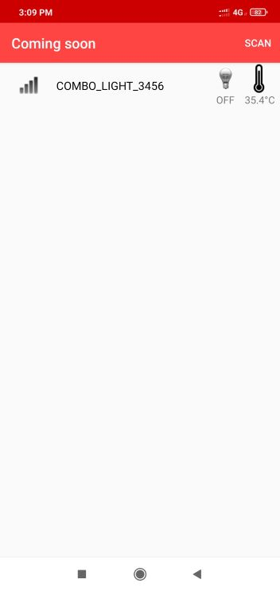 ----> 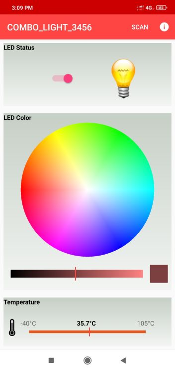
- 2.RGB color control from Alexa
Either through voice commands like "Alexa, Turn on my first light", "Alexa, Change color of my first light to "GREEN"", "Alexa, increase the brightness of my first light" or from Alexa app the RGB LED can be controlled through Zigbee network.
When the color is changed from Alexa, if combo light is connected with "BLE Sensor" mobile app, the changed color can be seen in mobile app as well.
If color is changed from "BLE Sensor", it will be reflected in Alexa app. There may be delay in syncing, since it depends on read attribute request from Alexa as explained in the below note and hence expect max 20sec of delay.
Notes:Echo Plus does the zigbee binding only for On/Off and Level Control Clusters. The color control cluster binding is not done from Echo Plus. Also, Echo Plus send the configure reporting command to combo light to disable periodic reporting of light attributes. Hence combo light will not report periodically. Instead Echo plus send the read attribute command to combo light every ~20sec and get the light values. Also, the read attribute command for color values will start only when the first color change is initiated from Alexa. Hence it is required to do first color change from Alexa, before changing from BLE sensor app for color synchronization to take place.
When the LED color is controlled from Alexa, there are 2 color control options available. One is temperature color control (SHADES of WHITE in below figure) and another is HueSaturation (colors in below figure) color control. BLE light is synced only for HueSaturation color control. So, if the color is changed for temperature color control, the RGB LED will be changed, but, the values will not be updated on BLE app.
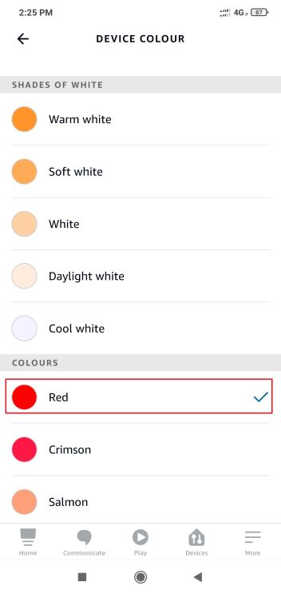 ----> 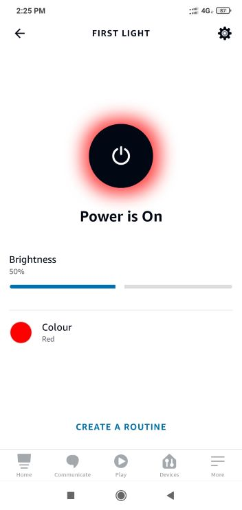 ---->

- 3.RGB color control from Combined Interface
The RGB color can be controlled from Combined Interface through console commands.
Similar to Alexa, when the RGB color is changed from Combined Interface, will be reflected in "BLE Sensor" app if connected. Changing from "BLE Sensor" app will be seen in next received report in combined Interface
The network address of the combo light is needed to send light control commands to combo light.
- This network address can be got from Combined interface console log while commissioning was done. 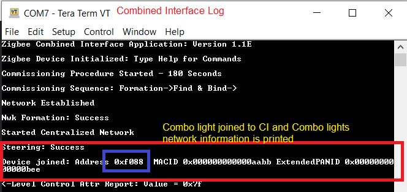
- Or, the network address can be got using below command on the combo light device
Command: getNetworkAddress Response: f088
- 1.RGB LED On/off command
onOff 0x0 0xf088 0x23 -on onOff 0x0 0xf088 0x23 -off
- 2.RGB LED brightness change command
moveToLevel 0x0 0xf088 0x23 0x45 0x0 0x1 0x0 0x0
0x45 is the configurable brightness value - 3.RGB LED color change command
moveToHueAndSaturation 0x0 0xf088 0x23 0x45 0x67 0x0 0x0 0x0
0x45 and 0x67 are the configurable Hue and Saturation values
Demo Steps: Other Features
- 1.
On board button actions:
When the on board "User Button (SW2)" is pressed for more than 10sec, it can delete all the networking information and will bring the device to factory default state. GREEN LED will be ON for a short time to indicate the successful factory reset state.
When the on board "User Button (SW2)" is pressed for more than 5sec, it can start the commisioning procedure if not already commisioned. This is same as "BLE provisioner" mobile app initiating the commisioning procedure.
- 2.
Persistent Data Storage (PDS): The RGB light status (On/Off) and brightness values are stored in NVM. So, power off/on of combo light, these values persist and RGB LED will reflect accordingly. This PDS storage is tied to zigbee network.
Combo device is not yet commissioned: Light values are not stored in NVM in this Scenario. So, power Off/On the light values will default to Off Status and default color (white, HSV = 0,0x7F, 0x7F)
Combo device is commissioned: The light On/Off status and light brightness is being stored in non-volatile memory in this case. So, power off/on, the LED will be updated with light on/off and brightness values retrieved from previous transaction.
Extended Fucntionalites
This application also implements device firmware over BLE link (Over-The-Air upgrade) and Serial device firmware upgrade through serial UART interfaceBLE DFU: Refer to Device firmware update over BLE for details on code, configuration and running OTA demo procedure.
Serial DFU: Refer to Device firmware update over serial for details on upgrading the device over serial interface.
Protocol Exchange
The communication protocol exchange between BLE Provisioner mobile app/ BLE sensor mobile app (BLE central) and WBZ451 module (BLE peripheral) is explained here